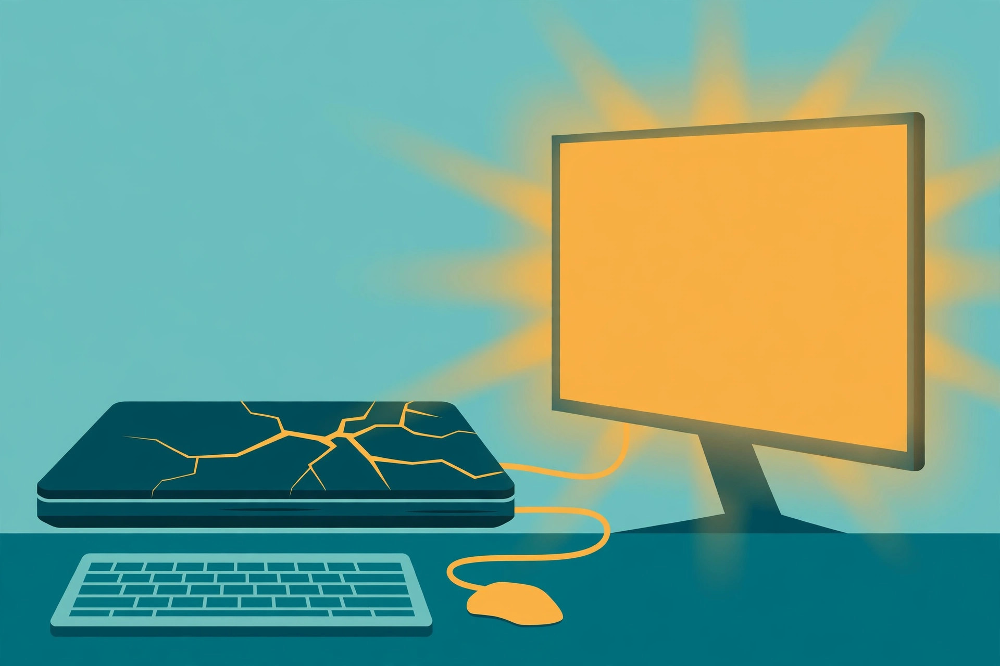

Laptop with a dead screen: revive it on an external display

A dead screen feels like a dead laptop. The machine hums, the fan spins, the disk light flickers — and the panel shows nothing, or shows a crack's worth of coloured chaos. But the screen is one component in a chain, and on an old laptop it is not even the most expensive one. The processor, drive, memory, and battery underneath that panel are frequently fine, which makes a screen failure the most misdiagnosed death in the revival business: machines get recycled whole when only the lid has failed. An external display — a monitor, or the TV already in the room — is both the test that proves what actually died and, often, the fix itself. This guide runs the test first, then turns the workaround into a proper closed-lid desk setup, then makes the repair call with clear eyes.
First, find out what actually died
Before connecting anything, read the symptoms the dead panel is still offering. A screen that is completely black but shows a faint image when a bright light is shone at it from an angle points to a backlight, panel, or cable failure rather than a dead logic board — the picture is being drawn, it is just not being lit. Flickers, lines, or artefacts that change when the lid is moved point at the display cable that flexes through the hinge (eDP on newer machines, LVDS on older ones) or a loose connector in that path — a cable problem, not a panel problem. A cracked panel is the exception to every repair hope: panels are swapped, not repaired, and once a crack reaches the liquid crystal layer the panel is scrap. Note which family the symptoms fall into. The external test confirms it.
The external-display test, step by step
- Find a display: any monitor, or a TV with a free input. This test costs nothing, so borrow before buying anything.
- Identify the laptop's video output and the display's input, and get a cable (or adapter) that joins them — the port guide below covers the combinations.
- Connect the cable, set the display to the correct input, and power the laptop on.
- If nothing appears, press Windows+P on the laptop keyboard and choose Duplicate or Second screen only. Some machines need to be told to use the external display; on a Mac laptop, closing the lid with power connected brings the external display up instead.
- Give it a full minute on a slow old machine before concluding anything — the login screen can take its time appearing on the second display.
- Once a picture appears, use the machine for a few minutes: open programs, play a short video, look for artefacts, freezes, or driver error messages.
- Before any repair decision, back up the important files to cloud storage or a USB drive, working on the external display. Whatever happens next, the data is safe.
Reading the result: lid problem or mainboard problem?
The test splits the world cleanly in two, and the two halves have completely different futures. A clean, stable picture on the external display means the graphics system is doing its job — the fault is in the lid: the panel, its backlight, or the cable through the hinge. That machine is a working computer wearing a broken screen, and everything after this section applies to it. The same artefacts, lines, or corruption on the external display as on the built-in one (or no picture anywhere, ever) points underneath the lid, at the graphics hardware or its driver on the mainboard. Try a driver reinstall once if a corrupted picture appears on both; if the artefacts persist, the honest verdict is that the machine's problem is no longer a screen problem, and panel money spent on it is wasted. Retrieve the files if at all possible and retire it.
Pick the port you actually have
| Port on the laptop | Found on | Notes |
|---|---|---|
| HDMI | Most consumer laptops of the last decade-plus; nearly every TV | The default choice. One cable carries the picture to a monitor or the TV used for the test |
| DisplayPort / Mini DisplayPort | Business-class laptops and older MacBooks | Full-quality digital output to monitors and TVs with the right cable or adapter |
| USB-C / Thunderbolt | Newer thin laptops | Carries video only if the port supports DisplayPort alt mode or Thunderbolt — check the model's specifications; a plain USB-C port is charge-and-data only, and no cable fixes that |
| VGA | Older laptops; older monitors and projectors | Analogue and softer at high resolutions, but genuinely present on the oldest machines — and a working picture today beats a perfect one never |
Mismatched ends are normal and solvable: adapters and combination cables (USB-C to HDMI is the common one) bridge most pairings, and in most cases the laptop detects the external display automatically once the cable is connected and the machine is powered on and charged. What no adapter can do is add video output to a port that never had it — which is why the USB-C check in the table comes before any purchase.
Make it permanent: lid settings for a closed-lid desk setup
Living with the lid propped open at an angle gets old within a day. The permanent arrangement is a closed laptop on the desk, an external keyboard and mouse, and the monitor as the only screen. On Windows, the setting is: open Control Panel, go to Hardware and Sound, then Power Options, and click "Choose what closing the lid does." Under "When I close the lid," set the Plugged in column to Do nothing and click Save changes. Leave the On battery column at Sleep. That asymmetry is deliberate, and the warnings in the how-to literature are consistent about it: a laptop set to stay awake on battery can be closed, bagged while still running, and cooked by its own heat. Plugged-in-only is the safe configuration — closed and running at the desk, asleep the moment it leaves the power cable. The setting applies across power plans, and the test is simple: with the monitor connected, close the lid; if the video stays on, it is configured properly.
On a Mac laptop the same arrangement is Apple's closed-display ("clamshell") mode, and it has conditions rather than a setting: an external display connected, the power adapter connected, and an external keyboard and mouse available. Meet all three and closing the lid brings the desktop up on the external display; unplug the power and the machine sleeps when closed, by design. Either platform, position the closed laptop so its vents are clear — a machine working full-time under a monitor stand still needs to breathe — and expect the trade the guides all name: the laptop gives up its portability and becomes a desktop. For a machine that was otherwise headed for recycling, that is a good trade.
What success looks like
Success is a boring morning: press the power button, the monitor lights up with the login screen, the laptop stays closed, and a full session — browsing, documents, a video — runs with no artefacts, no flicker, and no surprise sleeps when the lid moves. The backup from step 7 of the test exists on a drive or in the cloud. At that point the machine has a job again: a desk computer, a spare for guests, or the household's second screen-and-keyboard station.
Repair the panel, live with the monitor, or retire it?
With the diagnosis in hand, the decision has three honest branches. A widely used shop rule sets the outer bound: repair makes sense when it costs under half the laptop's current used value and nothing else is failing. Apply the second clause seriously on an old machine — a new panel on a laptop with a dying battery, a failing drive, and a worn keyboard is three repairs wearing a trench coat. Repair the panel when the laptop is otherwise healthy and its portability is the point: it travels, it is the only machine, or the desk setup would need a monitor purchase anyway. Live with the monitor when the machine's life is at a desk regardless — the closed-lid setup costs a cable and twenty minutes, and a cable-through-the-hinge fault may make even that unnecessary to fix. Retire it when the external test showed mainboard symptoms, or when the repair quote approaches what a better used laptop costs outright. And if a shop does the panel, get the parts-and-labour warranty in writing — ninety days is the minimum worth accepting.
FAQ
The external display shows nothing at all. Is the laptop dead? Not yet proven. Work the checklist in order: correct input selected on the display, a known-good cable, Windows+P set to Duplicate or Second screen only, a full minute of patience, and a second display or TV to rule out the first one. No picture on two displays, with the machine audibly running, is when the mainboard conclusion starts to hold.
Can the broken screen just be removed? Yes — a laptop whose display will not be repaired can have the lid assembly removed entirely and run as a compact desktop unit on the external monitor with its built-in keyboard. It is irreversible-looking but practical; keep the removed parts until the setup has proven itself for a week.
Is running closed bad for the laptop? The designed-for modes above are safe at a desk with clear vents. The real hazard is transport: never bag a laptop that is set to stay awake with the lid closed. The plugged-in-only setting exists to make that mistake impossible by accident.
Related: another second job for a screen-challenged laptop →